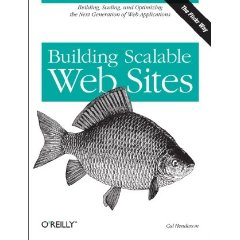
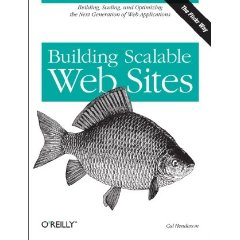

Building Scalable Websites
It's vacation week at Sun. During vacations I like to read at
least one technical book from a completely different area from what I
know. I've always been curious about how I would go about building
a website like slashdot, digg or last.fm that has to be able to handle
millions of page hits per day. Why doesn't the 'slashdot effect'
doom slashdot? How can last.fm stream thousands of custom audio stream in a day? How can digg go from 1,000 users to 10,000,000 users in a year without collapsing under the weight of all those users?

This week, I picked up the book Building Scalable Websites in an attempt to learn about all of these things. This book is written by Cal Henderson, the engineering manager at Flickr. Since Flickr is one of the busier web 2.0 sites out there, one would guess that Cal knows what he's talking about.
This book covers a wide range of topics from how to select a 'colo', protecting yourself against SQL injection attacks, internationalization, performance monitoring, scaling MySql and so on. The book is targeted at LAMP architectures (in fact, this is a bit of advice from the book - go with proven technologies like LAMP. Skip the latest trendy language or framework, stick with stable and well-understood platforms like LAMP). I found the sections on load balancing and scaling MySql to be very interesting. These sections are at the core of building a scalable web application.
My website building experience is limited to personal home pages and small experimental projects, with a maximum hit rate of perhaps 10 page views per day. I've never even used MySql. So most of the info in this book was brand new territory for me. I found it to be a fascinating look at what it takes to build a site that can scale into the millions users. Cal writes in a clear straightforward manner, presenting the material in a very approachable, organized format. Definitely recommended for all of those Flickr wannabees out there.

This week, I picked up the book Building Scalable Websites in an attempt to learn about all of these things. This book is written by Cal Henderson, the engineering manager at Flickr. Since Flickr is one of the busier web 2.0 sites out there, one would guess that Cal knows what he's talking about.
This book covers a wide range of topics from how to select a 'colo', protecting yourself against SQL injection attacks, internationalization, performance monitoring, scaling MySql and so on. The book is targeted at LAMP architectures (in fact, this is a bit of advice from the book - go with proven technologies like LAMP. Skip the latest trendy language or framework, stick with stable and well-understood platforms like LAMP). I found the sections on load balancing and scaling MySql to be very interesting. These sections are at the core of building a scalable web application.
My website building experience is limited to personal home pages and small experimental projects, with a maximum hit rate of perhaps 10 page views per day. I've never even used MySql. So most of the info in this book was brand new territory for me. I found it to be a fascinating look at what it takes to build a site that can scale into the millions users. Cal writes in a clear straightforward manner, presenting the material in a very approachable, organized format. Definitely recommended for all of those Flickr wannabees out there.

Posted by Ian Wilson on July 05, 2006 at 08:42 AM EDT #
Posted by jyri on July 05, 2006 at 09:17 AM EDT #